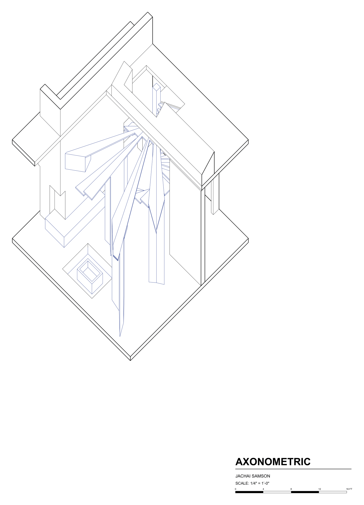
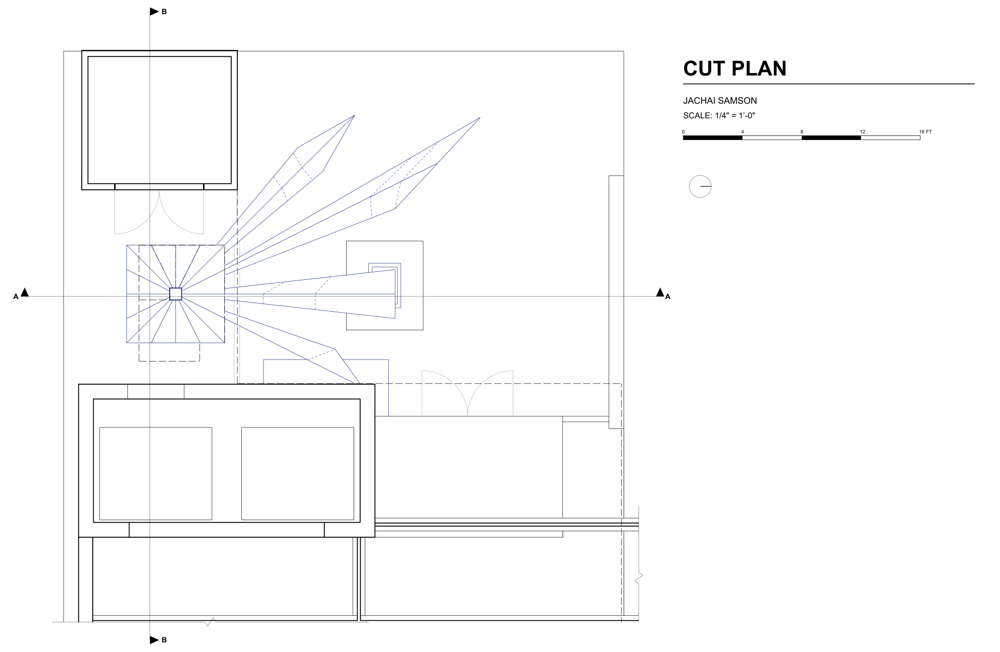
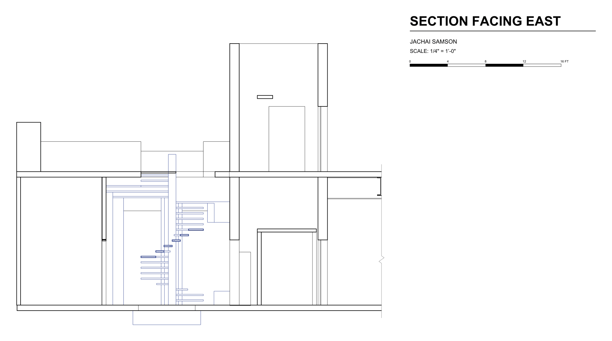
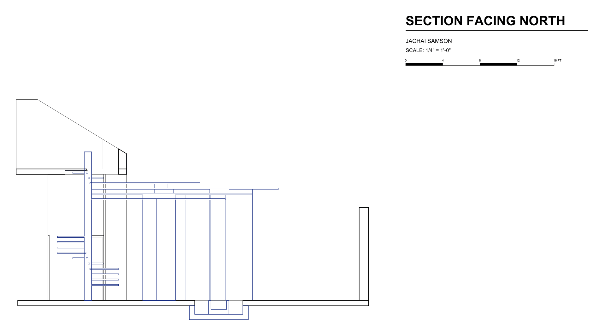
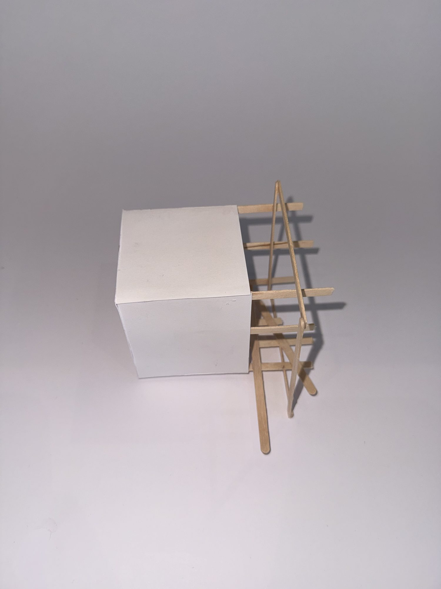
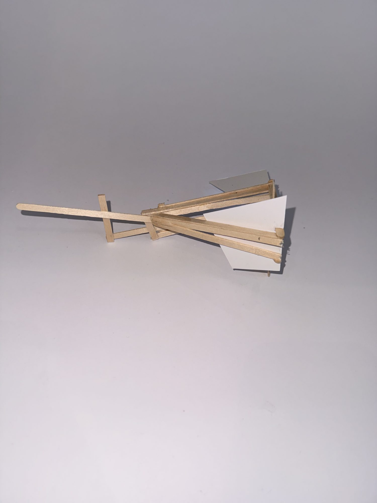
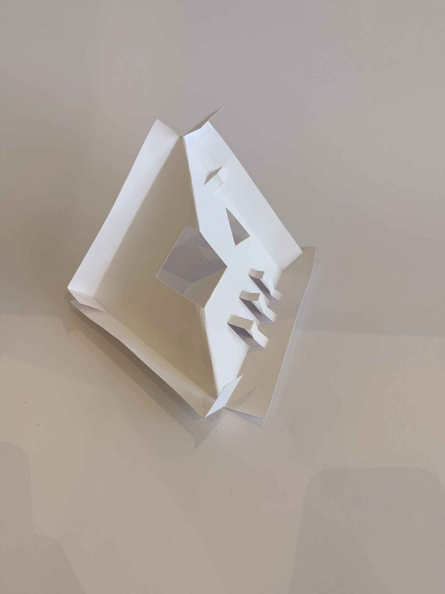
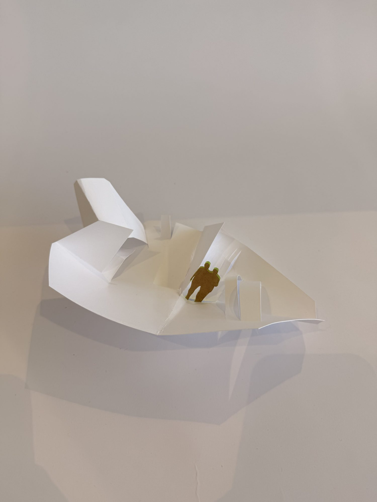
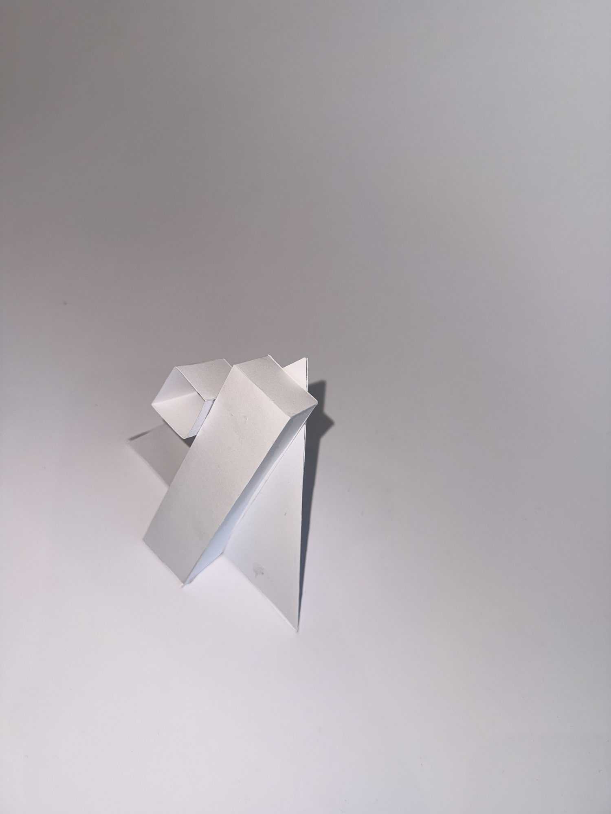

Project 02
Through the Rays
A light-driven spatial intervention at George Pearl Hall
My intervention explores how light interacts with George Pearl Hall. Site visits showed the front entrance (in shadow all day, but in the sun in late afternoon), with movement pulled along the wall and almost no reason to pause. The light/dark diagram recorded that wall as a hard break, and the tectonic and hybrid study models tested planes that could cross it.
The proposal extends that logic into a sun. A spiral stair is the center, rising from the floor to the open deck above. Blue fins radiate from its post like rays, and rather than stopping at the wall they break through it, reaching into the room on one side and over the court on the other. The threshold is no longer a plane but the moment you stand between the rays.
Underneath, the fins compress the entry and break the late afternoon sun into strips of light and shadow. On top, the fin nearest the stair thickens into a perch where one person sits alone, watching the sun set. At the far end the rays land on a sunken ring around a gas fire, seating carved from the floor, where three or four gather. Blue marks everything new against the neutral existing.
Model
Perspectives
Drawings




Site Diagrams
Process




